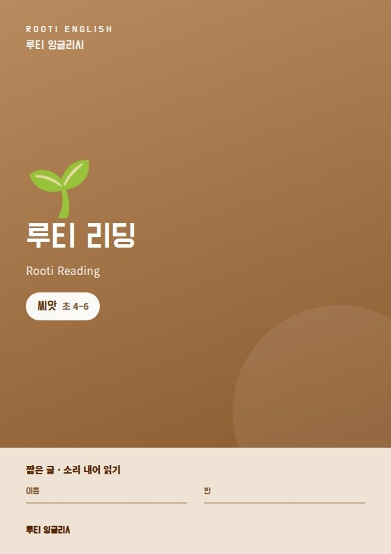
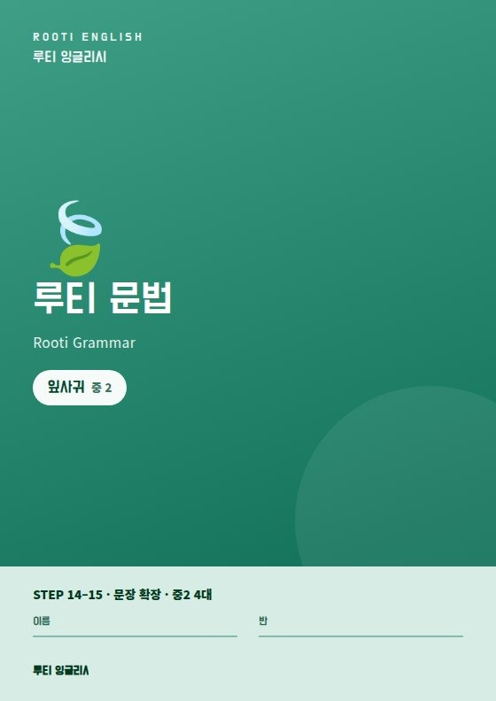
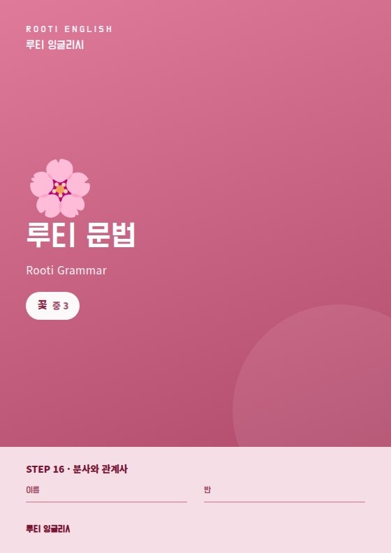
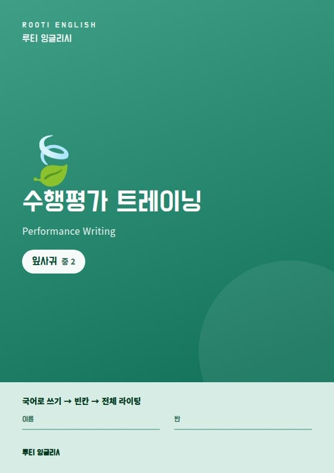
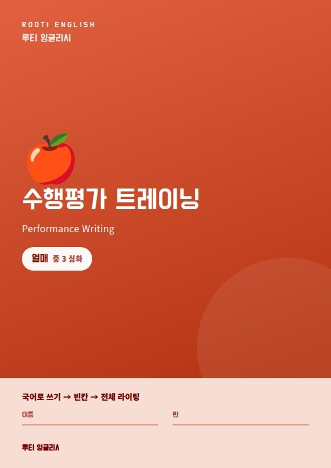

아이들이 막히는 자리에서 만든 커리큘럼
수업을 하다 보면 아이들은 늘 비슷한 자리에서 막힙니다. 그 자리를 넘기려고 루티 잉글리시라는 이름으로 교재와 온라인 시스템을 직접 만들었습니다.
왜 직접 만들었나
교재는 평균을 향해 만들어집니다
시중 교재는 잘 만들어져 있습니다. 다만 교재 한 권은 여러 학생의 평균을 향해 쓰입니다. 실제 수업에서는 아이마다 막히는 자리가 다르고, 그 자리는 교재가 따로 다뤄 주지 않습니다.
프라미스A는 그 지점을 수업에서 계속 보아 왔습니다. 그래서 아예 교재부터 새로 썼습니다. 루티 리딩 · 루티 문법 · 수행평가 트레이닝 세 갈래이고, 여러 번 반복해야 넘어가는 부분은 루티 영어 시스템(온라인)으로 옮겨 집에서도 이어서 하도록 했습니다.
커리큘럼이 도는 방식
수업에서 끝나지 않고 한 바퀴를 돕니다
다섯 단계가 계속 돌면서, 안 되는 부분이 그냥 지나가지 않게 합니다.
-
수업에서 그 자리에서 확인
오늘 배운 것을 바로 확인합니다. 모르는 채로 다음으로 넘어가지 않습니다.
-
루티 영어 시스템으로 반복
수업에서 걸린 STEP을 집에서 온라인으로 다시 합니다. 무엇을 얼마나 했는지 기록으로 남습니다.
-
독해 시스템으로 훈련
단어 · 문장 · 문단 · 글 전체로 넓혀 가며, 해석이 아니라 이해로 읽게 합니다.
-
학습 분석으로 점검
맞고 틀린 개수가 아니라, 어디에서 반복해서 막히는지를 봅니다.
-
다음 수업에 반영
분석에서 나온 지점이 다음 수업의 다지기 내용이 됩니다. 그래서 한 바퀴가 다시 돕니다.
독해 시스템
“해석은 되는데 무슨 말인지 모르겠다”를 없애는 것
독해가 안 되는 학생 대부분은 단어를 몰라서가 아닙니다. 단어를 이어 붙여 해석은 하는데, 글이 무엇을 말하는지 잡히지 않는 상태입니다. 프라미스A의 독해 시스템은 이 상태를 겨냥합니다.
넓혀 가며 읽습니다
단어에서 문장으로, 문장에서 문단으로, 문단에서 글 전체로 단계를 올립니다. 한 단계가 되지 않으면 다음 단계로 넘기지 않습니다.
자기 말로 되돌려 확인합니다
읽은 내용을 자기 말로 쓰게 합니다. 쓰지 못하면 읽은 것이 아니라고 봅니다. 라이팅을 독해 확인의 수단으로 씁니다.
막힌 지점을 기록합니다
어느 문장에서 멈췄는지, 어떤 유형에서 반복해서 걸리는지 남깁니다. 이 기록이 학습 분석의 재료가 됩니다.
문해력까지 이어 갑니다
영어 문장을 읽어내는 힘은 우리말 문해력과 함께 갑니다. 글의 구조와 의도를 잡는 훈련을 같이 합니다.
루티 영어 시스템 (온라인)
교재와 온라인이 한 몸으로 돕니다
수업 시간을 반복 훈련에만 쓰기에는 아깝습니다. 그래서 여러 번 되풀이해야 넘어가는 부분은 온라인으로 옮겼습니다. 교재의 같은 STEP이 온라인에도 있어, 수업에서 걸린 자리를 집에서 그대로 이어 갑니다.
수업과 이어집니다
- 그날 수업에서 걸린 부분이 그대로 이어집니다
- 새 내용이 아니라 다지기용입니다
- 짧게, 자주 하도록 구성했습니다
기록이 남습니다
- 언제 얼마나 했는지 남습니다
- 어떤 유형에서 자주 틀리는지 쌓입니다
- 이 기록이 학습 분석으로 이어집니다
학습 분석
점수보다 “어디서 막히는가”를 봅니다
같은 70점이라도 이유는 다릅니다. 단어가 안 잡힌 학생, 문장 구조에서 무너지는 학생, 알면서 시간에 쫓겨 틀리는 학생은 해야 할 일이 각각 다릅니다.
이런 것을 봅니다
- 반복해서 걸리는 유형
- 혼자 할 때와 확인받을 때의 차이
- 과제 수행과 학습태도의 흐름
이렇게 씁니다
- 다음 수업의 다지기 내용을 정합니다
- 교재 단계를 올릴지 판단합니다
- 상담 때 근거로 보여 드립니다
학습 분석은 학생을 줄 세우기 위한 것이 아닙니다. 무엇을 더 해야 하는지 학생과 학부모님이 같이 알기 위한 기록입니다.
교재 라인
교재까지 직접 만들었습니다
시중 교재를 쓰다가 아쉬웠던 부분을 모아, 루티 잉글리시 이름으로 교재를 직접 만들었습니다. 리딩 · 문법 · 수행평가 세 갈래로 나뉘고, 학년이 아니라 단계로 올라갑니다.
씨앗에서 열매까지, 네 단계
소리 내어 읽기부터
문장을 늘려 가기
구조를 꿰기
스스로 써내기
단계는 나이가 아니라 상태로 정합니다. 중학생이어도 씨앗부터 다시 하는 경우가 있고, 그게 결국 더 빠릅니다. 첫 수업에서 확인한 뒤 단계를 정해 구매 링크를 보내 드립니다.
교재 세 갈래





교재와 수업의 목표
| 교재 | 교재가 맡는 몫 | 수업에서 하는 것 | 목표 |
|---|---|---|---|
| 루티 리딩 | 짧은 글, 소리 내어 읽기 | 끊어 읽고 되짚으며 이해했는지 확인 | 읽은 내용을 자기 말로 설명하기 |
| 루티 문법 | 문장 확장 → 분사·관계사까지 단계별 STEP | 규칙을 외우는 대신 문장에 적용해 확인 | 긴 문장의 구조를 스스로 잡아내기 |
| 수행평가 트레이닝 | 국어로 쓰기 → 빈칸 → 전체 라이팅 | 쓴 것을 문장 단위로 첨삭 | 학교 수행평가에서 점수로 이어지게 |
| 학교 교과서 · 부교재 | 시험 범위에 맞춰 병행 | 내신 대비 | |
교재는 첫 수업 후 학생 상태를 보고 단계를 정합니다. 정해지면 구매 링크를 보내 드리고 직접 구매하시면 됩니다. 레벨테스트는 등록 후 첫날 수업에서 진행합니다.